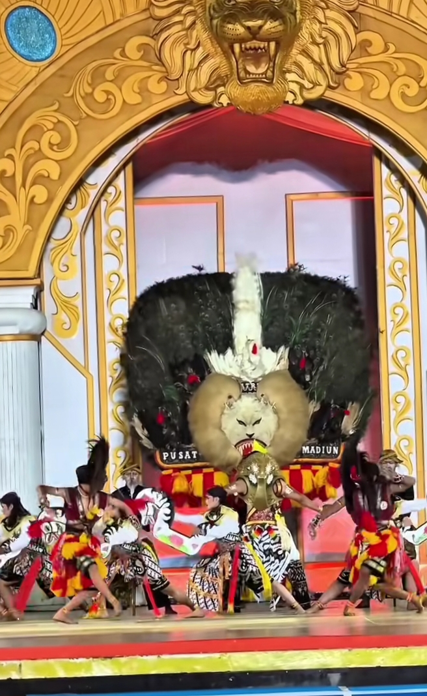
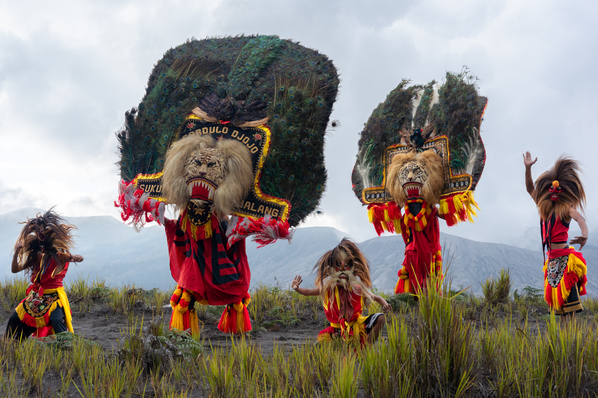

ART OF PONOROGO
Merayakan warisan Reog Ponorogo • Pelestarian budaya di era digital • Membangun ekonomi kreatif berbasis kearifan lokal
Reog Dalam Angka
Warisan budaya yang terus berkembang
100+
Grup Reog Aktif
50.000+
Penonton Festival
200+
Sekolah Ekstrakurikuler
20+
Negara Menampilkan Reog
Perjalanan Reog Ponorogo
Dari masa ke masa
Abad ke-15
Munculnya cerita Klono Sewandono dan Singo Barong sebagai simbol kekuatan.
Era Kerajaan
Digunakan sebagai media kritik sosial dan perlawanan budaya.
Era Modern
Menjadi ikon Kabupaten Ponorogo yang diakui secara nasional.
Era Digital
Reog dipromosikan melalui media sosial dan teknologi digital.
Mari Lestarikan Reog Ponorogo
Generasi muda memiliki peran penting dalam menjaga warisan budaya Indonesia agar tetap hidup dan dikenal dunia.
Tentang Ponorogo
Bumi Reog yang penuh sejarah dan kebanggaan sejak abad ke-15

Sejarah Berdirinya
Kadipaten Ponorogo berdiri pada tanggal 11 Agustus 1496 Masehi, tanggal inilah yang kemudian ditetapkan sebagai hari jadi kota Ponorogo. Penetapan tanggal ini merupakan kajian mendalam atas dasar bukti peninggalan benda-benda purbakala di daerah Ponorogo dan sekitarnya, juga mengacu pada buku Hand book of Oriental History, sehingga dapat ditemukan hari wisuda Bathoro Katong sebagai Adipati Kadipaten Ponorogo. Bathoro Katong adalah pendiri Kadipaten Ponorogo yang selanjutnya berkembang menjadi Kabupaten Ponorogo.
Bumi Reog Ponorogo
Kabupaten Ponorogo dikenal sebagai pusat lahirnya kesenian Reog Ponorogo yang mendunia — pertunjukan seni budaya paling megah dari Jawa Timur dengan topeng Singo Barong yang bisa mencapai berat 50 kilogram.
Kota Santri
Selain sebagai Kota Reog, Ponorogo juga dikenal sebagai Kota Santri dengan ribuan santri yang menjaga tradisi dan nilai-nilai keislaman yang kuat.
Karakter Utama Reog
Tokoh-tokoh ikonik dalam pertunjukan Reog Ponorogo
Prabu Klono Sewandono
Raja sakti dari Kerajaan Bantarangin. Pencipta Reog untuk meminang Dewi Songgolangit dengan senjata sakral Pecut Samandiman.
Singo Barong
Topeng kepala singa dengan mahkota burung merak. Simbol kekuatan dan kecerdikan yang bersatu, bisa mencapai berat 50 kg.
Warok
Pengawal kharismatik yang merepresentasikan kekuatan spiritual. Dikenal dengan kekuatan fisik dan ilmu batin yang tinggi.
Bujang Ganong
Patih Pujangga Anom yang lincah dan jenaka. Penari dengan gerakan akrobatik yang memukau penonton.
Jathil
Penunggang kuda putih yang energik. Menampilkan tarian berkuda yang anggun dan bersemangat.
Pengiring Musik
Gamelan, kendang, dan terompet reog yang khas menciptakan atmosfer magis dalam setiap pertunjukan.
Galeri Reog Ponorogo
Keindahan budaya yang mendunia
Lokasi Ponorogo
Temukan asal-usul budaya Reog
Tantangan Kearifan Lokal
Permasalahan dan peluang pelestarian budaya Reog Ponorogo
Globalisasi
Reog bukan sekadar tarian, tapi mengandung nilai wirasasra dan wiramuda. Di era globalisasi, nilai-nilai ini sering hanya menjadi hiburan visual demi menarik turis mancanegara, sehingga nilai sakralnya luntur. Teknologi bisa menjadi wadah namun mengurangi pengalaman langsung di alun-alun.
Nilai Budaya TerancamUrbanisasi
Tradisi nyadran dan sedekah bumi sangat bergantung pada kebersamaan warga desa. Banyak pemuda Ponorogo merantau ke kota besar, hingga menyebabkan kekurangan tenaga untuk menyelenggarakan ritual yang sifatnya gotong royong.
Sumber Daya ManusiaPerkembangan Teknologi
Hiburan digital menggeser perhatian masyarakat dari seni tradisional. Kesenjangan literasi digital dan pergeseran minat ke media digital juga menyebabkan waktu untuk belajar seni tradisional berkurang.
Persaingan DigitalRegenerasi Seniman
Minat generasi muda terhadap seni Reog menurun. Butuh pendekatan kreatif untuk menarik generasi Z agar mau belajar dan melestarikan seni budaya Ponorogo secara sungguh-sungguh.
RegenerasiPendanaan Seni
Biaya produksi kostum Reog sangat tinggi. Topeng Singo Barong yang autentik bisa menghabiskan puluhan juta rupiah, membebani grup-grup Reog kecil di desa-desa Ponorogo.
Ekonomi BudayaPeluang Digital
Teknologi bisa menjadi solusi: platform streaming, konten edukatif, media sosial, dan kolaborasi dengan seniman modern dapat memperluas jangkauan Reog ke seluruh dunia.
Peluang PositifReog Di Era Digital
Menelusuri perjalanan seni Reog yang terus hidup melampaui zamannya

Sejarah Reog Ponorogo
Reog Ponorogo bukan sekadar pertunjukan seni, tetapi juga bagian dari identitas budaya yang kuat dan penuh makna. Setiap gerakan, kostum, dan alunan musiknya mengandung nilai filosofis tentang kekuatan, kecerdikan, serta kreativitas.
Di balik kemegahan tariannya, tersimpan kisah Prabu Klono Sewandono, seorang raja sakti dari Kerajaan Bantarangin yang berusaha meminang Dewi Songgolangit. Namun, syarat yang diajukan sang putri tidaklah mudah — ia meminta tarian yang belum pernah ada sebelumnya, dengan binatang berkepala dua.
Demi memenuhi permintaan tersebut, Prabu Klono Sewandono menciptakan Reog Ponorogo, menghadirkan sosok Singo Barong, makhluk berkepala singa dengan mahkota merak di atasnya — sebuah simbol kekuatan dan kecerdikan yang bersatu dalam pertunjukan megah.
Pertunjukan Reog
Pertunjukan Reog mencapai puncaknya ketika Prabu Klono Sewandono dan Singo Barong bertarung, diawali dengan kemunculan Jathil, para penunggang kuda putih yang energik, lalu diikuti oleh Warok, pengawal kharismatik yang merepresentasikan kekuatan spiritual.
Dengan Pecut Samandiman, senjata sakral berbentuk tongkat rotan berhias jebug merah dan kuning, Prabu Klono Sewandono akhirnya menaklukkan Singo Barong.
Reog tidak hanya menjadi seni pertunjukan, tetapi juga bagian dari tradisi sakral Gerbeksurau, sebuah ritual penghormatan terhadap pusaka yang dikirab dan dimandikan pada malam satu surau. Malam ini juga menjadi ajang Festival Reog Mini dan Festival Reog Nasional.
Reog Ponorogo Di Era Teknologi
Seiring perkembangan zaman, muncul pertanyaan besar mengenai kelangsungan Reog Ponorogo. Banyak pihak yang khawatir apakah seni ini mampu bertahan menghadapi modernisasi atau justru tergeser oleh hiburan digital.
Namun, hingga saat ini, antusiasme masyarakat terhadap Reog masih tinggi. Festival Reog Mini dan Festival Reog Nasional tetap menarik banyak penonton, termasuk mahasiswa dari Universitas Brawijaya.
Pertunjukan Spesial: Drama-Tari di Bawah Bulan Purnama
UKM PSRM Sardulo Anorogo mempersembahkan pertunjukan drama-tari spektakuler di bawah keindahan bulan purnama. Acara berlangsung pada Sabtu, 17 Mei 2025, bertempat di Panggung Gedung Ir. Soekarno, mulai pukul 19:30.
Melalui perpaduan antara tradisi, teknologi, dan komunitas, Reog Ponorogo tetap tegak sebagai warisan budaya yang akan terus hidup. Seni ini tidak hanya sekadar warisan masa lalu, tetapi juga bagian dari identitas yang harus terus dirawat dan dilestarikan.
Video Edukasi
Media pembelajaran interaktif budaya Reog Ponorogo
Mengenal Reog Ponorogo: Warisan Budaya Dunia
Saksikan kemegahan pertunjukan Reog Ponorogo dan pelajari nilai-nilai budaya yang terkandung di dalamnya.Video ini memberikan pembelajaran mendalam tentang pentingnya menjaga dan melestarikan warisan budaya leluhur agar tidak punah ditelan zaman. Melalui visual kirab budaya yang megah dengan latar keindahan alam Ponorogo, video ini mengajak kita untuk menumbuhkan rasa bangga terhadap identitas daerah dan kekayaan tradisi Nusantara. Selain itu, perpaduan musik gamelan tradisional dan gerakan tari Reog yang ikonik memperlihatkan harmoni serta nilai estetika tinggi, yang sekaligus menjadi pengingat bagi generasi muda untuk terus merawat kesenian tradisional ini sebagai aset bangsa yang tak ternilai.
Quiz Reog Ponorogo
20 soal pilihan ganda tentang budaya Ponorogo
Siap Uji Pengetahuan?
Jawab 20 soal tentang Reog Ponorogo dan dapatkan nilai terbaik kamu!
Game Warok
Bantu Warok melompat, kumpulkan topeng, dan hindari keris musuh!